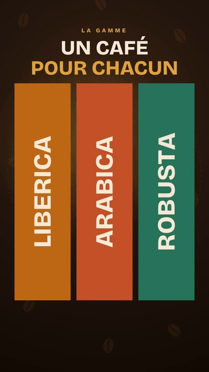
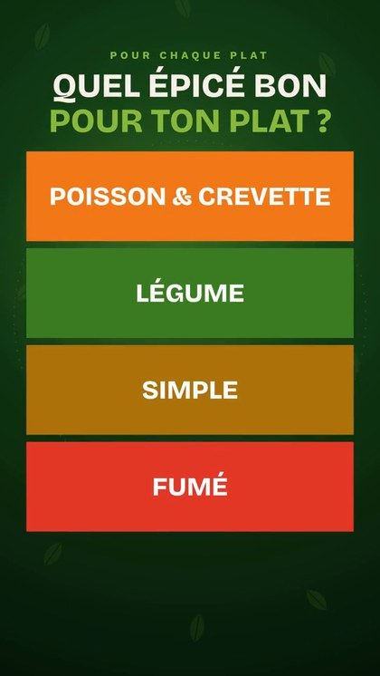
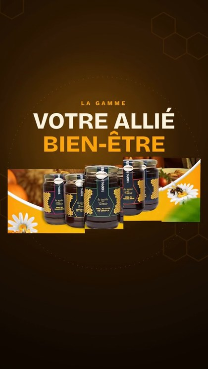
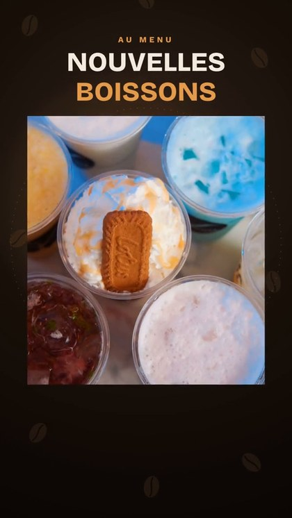
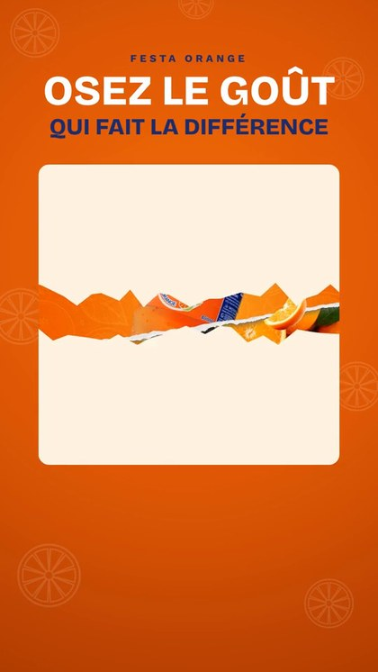

GUIDE GRATUIT
DIGITALMIKAELSON
Comment j'ai trouvé 50 entreprises et créé 6 vidéos avec l'IA
La méthode en 3 étapes, avec mes vraies captures d'écran.





Trouver · Créer · Envoyer
Avant de commencer
Salut, moi c'est Mike 👋
Dans la vidéo que tu as vue, j'ai utilisé l'IA pour une chose simple : aider des petites marques congolaises à mieux se montrer sur les réseaux. Et au passage, me faire connaître d'elles.
Beaucoup de ces marques ont déjà de belles photos sur Instagram. Ce qui leur manque souvent, c'est le mouvement. Une vidéo courte, qui fait arrêter le doigt pendant qu'on fait défiler. C'est là que tu peux te rendre utile.
Ce guide te montre exactement ce que j'ai fait, dans l'ordre, avec mes vraies captures d'écran. Pas de blabla, juste ce qu'il faut faire, concrètement.
Les 3 étapes
- Trouver des entreprises avec l'IA, et garder les bonnes.
- Créer une vidéo animée pour chacune, avec ses propres photos.
- La lui envoyer en DM, comme un cadeau.
Ce qu'il te faut : un téléphone ou un ordinateur, une connexion internet, un assistant IA, et de la patience pour bien faire chaque vidéo.
ÉTAPE 1
Trouver des entreprises
J'ai demandé à un assistant IA, relié à une base de données d'entreprises, de me trouver des marques de l'alimentation en RDC.
MA DEMANDE, MOT POUR MOT« Retrouve-moi 50 entreprises dans tous les domaines qui se rapprochent de l'alimentation : restaurants, fast-food… ici en RDC. »
Ma demande. L'IA lance la recherche toute seule.
Les résultats : nom, ville, secteur, taille. Puis l'export des 50.
ÉTAPE 1, SUITE
Garder les bonnes
La liste des 50 entreprises, dans un tableau.
50 noms, c'est trop pour commencer. J'en ai gardé 6. Voici comment je choisis :
- Des petites marques qui vendent directement aux clients, souvent gérées par le fondateur. Ce sont elles qui répondent.
- Un compte Instagram actif, avec de belles photos. Il te faut de la matière pour la vidéo.
- Laisse les grandes entreprises pour plus tard : elles ont déjà une agence.
Où trouver leur contact ?
Dans la bio Instagram ou Facebook (bouton WhatsApp ou « Contacter »), en bas de leur site, ou sur leur fiche Google Maps. Vérifie toujours que le numéro a bien un compte WhatsApp avant d'écrire.
ÉTAPE 2
Créer une vidéo pour chacune
Les 6 vidéos, faites uniquement avec les photos de chaque marque.
MA RÈGLE D'ORJ'utilise seulement leurs propres photos et leurs propres mots : logo, produits, phrases de leur bio et de leurs publications. Rien d'inventé.
- Fais des captures d'écran de leurs plus belles publications.
- Demande à l'IA de détourer les produits et de proposer le déroulé : logo, produit, message, contact.
- Anime le tout : les morceaux arrivent et se rassemblent. Vise 20 secondes, en format vertical.
Les erreurs à éviter
- Publier la vidéo sans leur accord. C'est leur marque. Tu attends leur feu vert, toujours.
- Inventer des choses sur eux. Pas de faux chiffres, pas de fausses promesses dans la vidéo.
- Envoyer le même message à tout le monde. Le compliment doit montrer que tu as vraiment regardé leur page.
- Relancer tous les jours. Une seule relance, quelques jours plus tard, suffit.
- Écrire à n'importe quelle heure. Choisis leurs heures d'ouverture, en semaine, plutôt le matin.
Et chez moi, ça a donné quoi ?
Une des entreprises m'a déjà répondu qu'elle voulait garder contact. Pour un premier message, sans rien payer en publicité, c'est un très bon début. Et chaque vidéo que je fais enrichit mon portfolio.
Et maintenant ?
Ici, ma compétence, c'était la vidéo. Toi, tu sais peut-être cuisiner, coudre, coiffer, parler une autre langue, tenir une comptabilité ou travailler le bois.
Je sais ce que c'est de savoir faire quelque chose sans que ça rapporte. Ce que tu sais faire ne devrait pas rester pour toi seul.
Dans mon guide « Gagne ta vie sans diplôme », je te montre comment transformer ce que tu sais faire en produit digital, et trouver tes premiers clients, étape par étape.
Écris-moi sur WhatsApp, je t'accompagne+243 831 710 181